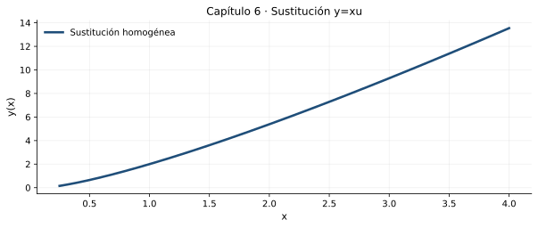

Homogéneas, Bernoulli, criterio de exactitud y extensiones
Resultado de aprendizaje
Identificar cambios de variable eficaces, transformar EDO no lineales seleccionadas en separables o lineales, y resolver ecuaciones exactas mediante una función potencial.
No existe un procedimiento elemental universal para todas las EDO de primer orden. Antes de operar, observe si la ecuación es separable, lineal, homogénea o exacta. Las sustituciones funcionan cuando convierten el problema a una de esas formas. Conviene documentar la transformación y, al final, regresar a la variable original.
Homogénea \(y\prime=F(y/x)\): proponer \(u=y/x\), con \(x\ne0\).
Bernoulli \(y\prime+p(x)y=q(x)y^n\): proponer \(z=y^{1-n}\), con atención a \(y=0\).
Exacta \(M(x,y)dx+N(x,y)dy=0\): buscar potencial \(\Phi\) con \(d\Phi=Mdx+Ndy\).
Compruebe la idea principal: identifique las condiciones bajo las cuales el procedimiento explicado es válido.
6.2. Ecuaciones homogéneas
Si \(y\prime=F(y/x)\), escribir \(y=xu\) y derivar por regla del producto: \(y\prime=u+xu\prime\). La ecuación se convierte en \(xu\prime=F(u)-u\), frecuentemente separable.
Con \(y(1)=2\) y \(x>0\), resulta \(u=\ln x+2\) y \(y=x(\ln x+2)\). Compruebe siempre el dominio antes y después de sustituir.
Compruebe la idea principal: identifique las condiciones bajo las cuales el procedimiento explicado es válido.
6.3. Ecuaciones de Bernoulli
La ecuación \(y\prime+p(x)y=q(x)y^n\), con \(n\ne0,1\), es no lineal en \(y\) pero se reduce a una EDO lineal mediante \(z=y^{1-n}\):
\[z\prime+(1-n)p(x)z=(1-n)q(x)\]
La transformación supone que la potencia requerida esté definida. Además, si se ha dividido por una potencia de \(y\), debe comprobarse separadamente \(y=0\) como posible solución. El caso \(n=0\) ya es lineal.
Compruebe la idea principal: identifique las condiciones bajo las cuales el procedimiento explicado es válido.
6.4. Ecuaciones exactas y potencial
Para \(Mdx+Ndy=0\), si \(M,N\) tienen derivadas parciales continuas sobre un dominio rectangular, la ecuación es exacta cuando \(\partial M/\partial y=\partial N/\partial x\). Entonces existe una función potencial \(\Phi\) cuya diferencial es \(Mdx+Ndy\).
Integre primero \(M\) respecto de \(x\) añadiendo una función desconocida de \(y\), \(h(y)\); derive la expresión resultante respecto de \(y\), equipare a \(N\) y determine \(h\). Las curvas de nivel pueden tener múltiples ramas; una condición inicial selecciona la apropiada.
Compruebe la idea principal: identifique las condiciones bajo las cuales el procedimiento explicado es válido.
6.5. Métodos complementarios
Los apuntes de clase también contienen sustituciones de coeficientes lineales y la ecuación de Riccati. Se incluyen como profundización conceptual: una ecuación de Riccati \(y\prime=a(x)y^2+b(x)y+c(x)\) puede reducirse a una lineal en \(u\) si se conoce una solución particular \(y_p\), mediante \(y=y_p+1/u\). No se afirma que todas las Riccati tengan una solución elemental.
Compruebe la idea principal: identifique las condiciones bajo las cuales el procedimiento explicado es válido.
Tres problemas resueltos paso a paso
Ejemplo 1. Sustitución homogénea
Resuelva \(y\prime=1+y/x\), \(y(1)=2\), \(x>0\).
Sustituya \(u=y/x\), es decir, \(y=xu\), \(y\prime=u+xu\prime\).
Iguale: \(u+xu\prime=1+u\), de donde \(u\prime=1/x\).
Integre: \(u=\ln x+C\); con \(y(1)=2\), \(u(1)=2\), así que \(C=2\).
Resultado
\[y(x)=x(\ln x+2),\qquad x>0\]
Comprobación y criterio: \(y\prime=\ln x+3\) y \(1+y/x=1+\ln x+2=\ln x+3\).
Ejemplo 2. Bernoulli
Resuelva \(y\prime+y=y^2\), \(y(0)=1/2\).
Para \(y\ne0\), divida por \(y^2\): \(y\prime/y^2+1/y=1\).
Defina \(z=1/y\), con \(z\prime=-y\prime/y^2\); entonces \(z\prime-z=-1\).
La lineal resulta \(z=1+Ce^t\). Como \(z(0)=2\), \(C=1\); regresar a \(y\).
Resultado
\[y(t)=\frac{1}{1+e^t}\]
Comprobación y criterio: \(y\prime+y=1/(1+e^t)^2=y^2\). La solución de equilibrio \(y=0\) existe, aunque no cumple el dato inicial.
Ejemplo 3. Función potencial
Resuelva \((2xy+2x)dx+(x^2+2y)dy=0\), con \(y(1)=1\).
Identifique \(M=2xy+2x\), \(N=x^2+2y\). Luego \(M_y=2x=N_x\), por lo que es exacta.
Integre \(M\) en \(x\): \(\Phi=x^2y+x^2+h(y)\).
Exija \(\Phi_y=x^2+h\prime(y)=N=x^2+2y\); se obtiene \(h(y)=y^2\).
La condición \((1,1)\) fija \(C=1+1+1=3\).
Resultado
\[\Phi(x,y)=x^2y+x^2+y^2=3\]
Comprobación y criterio: Derivar \(\Phi\) reproduce exactamente \(Mdx+Ndy\). La solución queda implícita, y se debe seleccionar la rama con \(y(1)=1\).
Laboratorio de MATLAB
El archivo del capítulo contiene experimentos reproducibles y parámetros modificables, organizados en secciones %%. Puede abrirlo en el Editor, ejecutarlo por partes y convertirlo en Live Script de acuerdo con la versión instalada de MATLAB.

Representación inicial de referencia. Los scripts amplían el análisis con nuevas simulaciones.
Requisito: MATLAB con funciones básicas y ode45. No se necesita Symbolic Math Toolbox para las actividades incluidas.
Resuelva con razonamiento matemático, verifique por sustitución cuando sea posible y discuta dimensiones, dominio o interpretación de los resultados. Se incluyen pistas y respuestas de algunos ejercicios más adelante.
Nivel I · Conceptos y reconocimiento
Clasifique \(y\prime=1+y/x\) y sugiera la sustitución adecuada.
Resuelva \(y\prime=y/x\), con \(y(1)=3\) y \(x>0\).
Resuelva \(y\prime=1+y/x\), \(y(1)=2\).
Indique la sustitución en \(y\prime+y=y^3\).
Nivel II · Procedimientos y verificación
Resuelva \(y\prime+y=y^2\), \(y(0)=1/2\).
Compruebe si \(M=2xy\), \(N=x^2+1\) define una EDO exacta.
Encuentre \(\Phi\) para \(M=2xy\), \(N=x^2+1\).
Encuentre \(\Phi\) de \(M=2xy+2x\), \(N=x^2+2y\).
Use \(y(1)=1\) en el ejercicio anterior para obtener \(C\).
Nivel III · Aplicaciones e interpretación
Compruebe exactitud de \((y+1)dx+xdy=0\).
Resuelva la exacta \((y+1)dx+xdy=0\) con \(y(1)=2\).
Explique el papel de \(h(y)\) cuando se integra \(M(x,y)\) respecto de \(x\).
Verifique que \(y=1\) es solución particular de \(y\prime=(y-1)^2\) y encuentre una solución no constante.
Compare diferencias entre exactitud y separabilidad; dé un ejemplo de cada método.
Trabajo de aplicación
4 actividades al finalizar el tema
A1 · Árbol de decisión
Elabore un diagrama de clasificación para decidir entre separables, lineales, homogéneas, Bernoulli y exactas.
Evidencia mínima: procedimiento razonado, resultados con unidades cuando correspondan, una verificación y conclusión propia.
A2 · MATLAB: sustituciones
Represente las soluciones de ejemplos homogéneo y Bernoulli; verifique las expresiones con una integración numérica.
Evidencia mínima: procedimiento razonado, resultados con unidades cuando correspondan, una verificación y conclusión propia.
A3 · Contornos exactos
Grafique \(\Phi(x,y)=3\) con contour, marque \((1,1)\) y contraste ramas cercanas.
Evidencia mínima: procedimiento razonado, resultados con unidades cuando correspondan, una verificación y conclusión propia.
A4 · Taller colaborativo
Resuelva cuatro EDO de métodos distintos. Cada equipo debe justificar por qué el método elegido es aplicable y qué soluciones se pueden perder por divisiones.
Evidencia mínima: procedimiento razonado, resultados con unidades cuando correspondan, una verificación y conclusión propia.
Orientación de valoración, no asignación oficial
Para una actividad docente de práctica sobre 5 puntos se sugiere: planteamiento 1 p.; procedimiento 1.5 p.; verificación/uso de MATLAB 1 p.; interpretación 1 p.; presentación y unidades 0.5 p. El docente decidirá qué actividades se califican según el sílabo vigente.
Autoevaluación conceptual
Abra cada pregunta para comprobar su interpretación. Estas preguntas son de práctica y no constituyen una evaluación en línea.
¿Cuándo se usa \(u=y/x\)?
Cuando el lado derecho depende únicamente de la razón \(y/x\).
¿Cuál es el criterio de exactitud en un rectángulo?
\(M_y=N_x\), si las derivadas parciales cumplen la regularidad requerida.
¿Por qué se suma \(h(y)\) a \(\int M\,dx\)?
Porque el término independiente de \(x\) puede depender de \(y\).
Respuestas seleccionadas de los ejercicios
Contraste solo después de intentar resolver. Una expresión correcta requiere también procedimiento, intervalo de validez e interpretación cuando correspondan.
2: \(y=3x\).
3: \(y=x(\ln x+2)\).
4: \(z=y^{-2}\), para \(y\ne0\).
5: \(y=1/(1+e^t)\).
6: sí, \(M_y=N_x=2x\).
7: \(\Phi=x^2y+y\).
9: \(C=3\).
10: sí, porque \(M_y=1=N_x\).
11: \(x(y+1)=3\), \(y=3/x-1\) en \(x>0\).
13: \(y=1+1/(C-x)\), donde esté definida.
Lectura complementaria y observaciones
Se amplía el contenido 1.6 con métodos presentes en las diapositivas de clase. La parte de Riccati se ofrece como extensión optativa.
Referencia bibliográfica: Calderón, G., Arango, J. y Gómez, A. (2023), Ecuaciones diferenciales para estudiantes de ciencias e ingenierías, Universidad del Valle; Zill, D. G. (2015), Ecuaciones diferenciales con aplicaciones de modelado. Los textos, ejercicios y gráficos de esta página son producciones nuevas y no reproducen el contenido editorial suministrado.